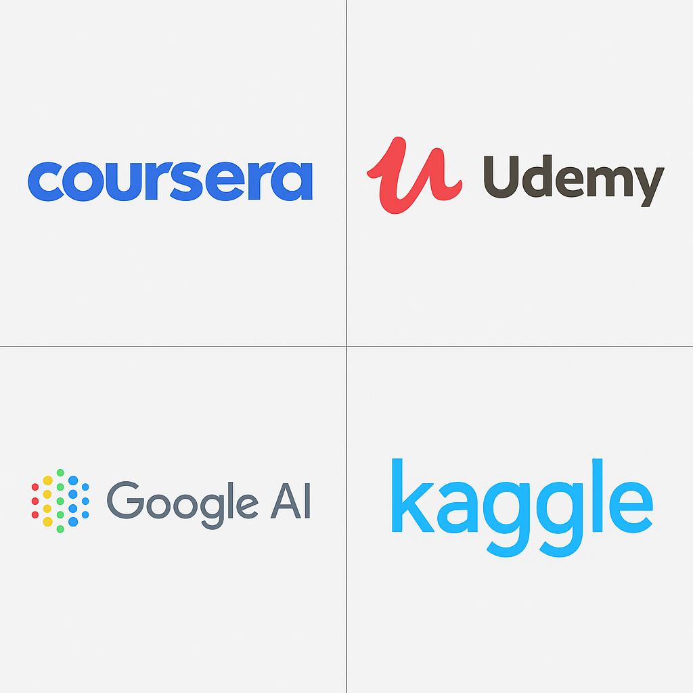

Kaynaklar ve Eğitim
Yapay Zeka Eğitim Kaynakları
Aşağıdaki görseldeki platform logolarına tıklayarak ilgili eğitim içeriklerine ulaşabilirsiniz.
Kitaplar
- "Yapay Zeka: Modern Yaklaşımlar" - Stuart Russell & Peter Norvig - Yapay zeka konusunda temel ve ileri düzeyde bilgiler sunan bir kitap.
- "Deep Learning" - Ian Goodfellow, Yoshua Bengio, Aaron Courville - Derin öğrenme konusuna dair kapsamlı bir kaynak.
- "Artificial Intelligence: A New Synthesis" - Nils J. Nilsson - Yapay zekanın temelleri hakkında derinlemesine bir inceleme.
Online Kurslar
- Coursera: Machine Learning (Andrew Ng) - Dünyaca ünlü Andrew Ng tarafından verilen popüler bir kurs.
- Udacity: Intro to Artificial Intelligence - Yapay zeka temelleri üzerine kapsamlı bir giriş.
- edX: Artificial Intelligence (AI) - MIT tarafından sunulan, yapay zeka uygulamaları ve teorilerine dair bir kurs.